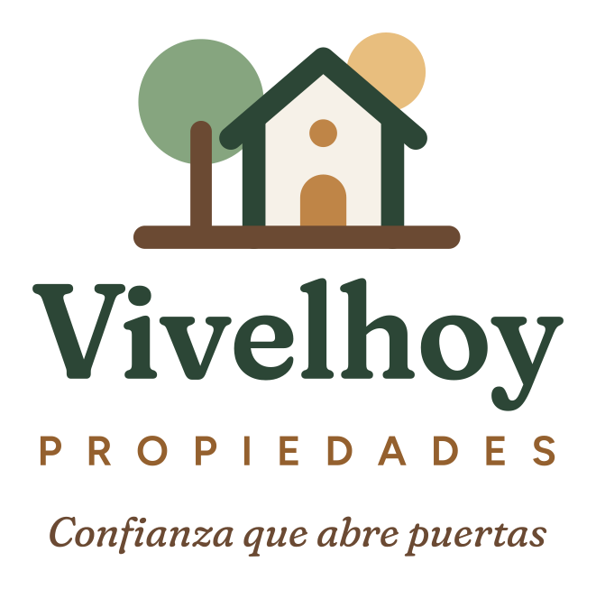
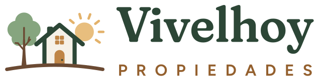
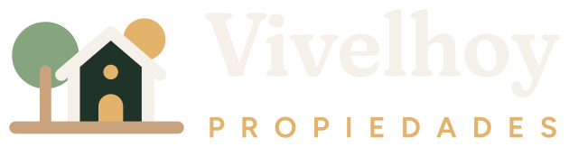
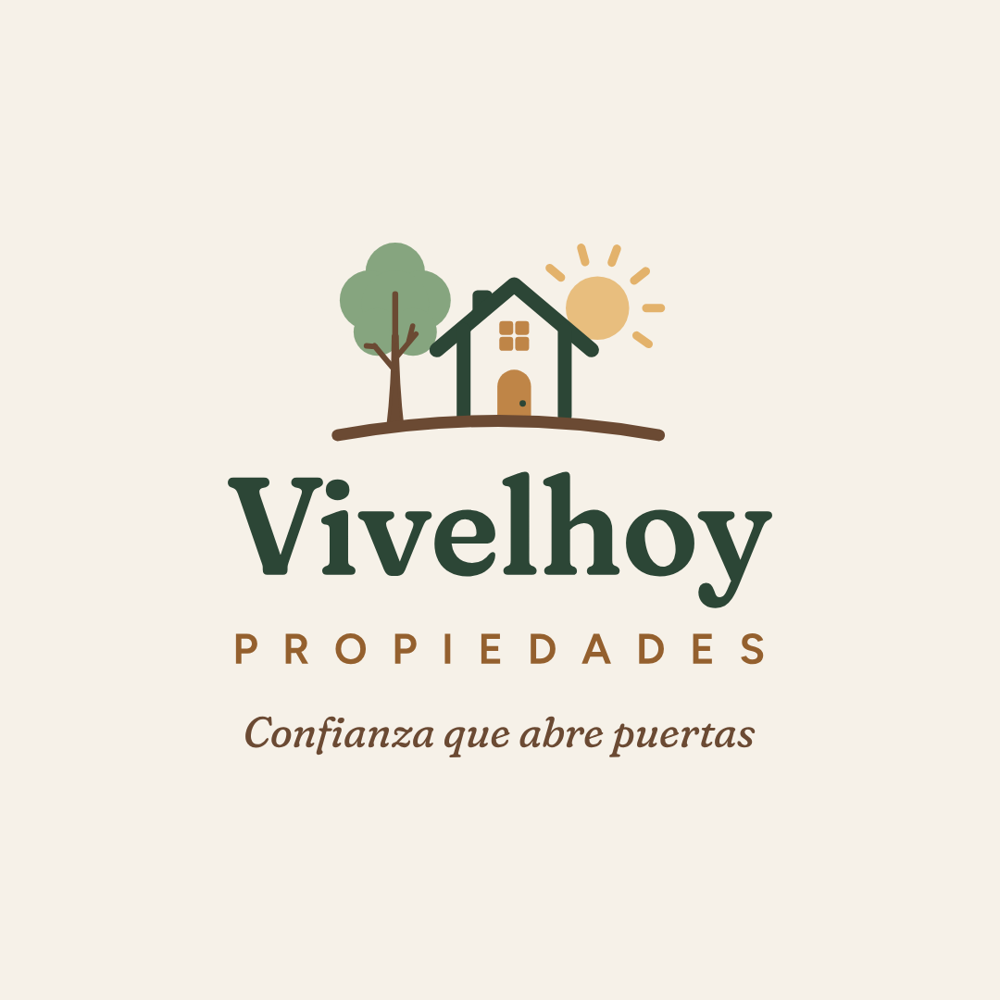
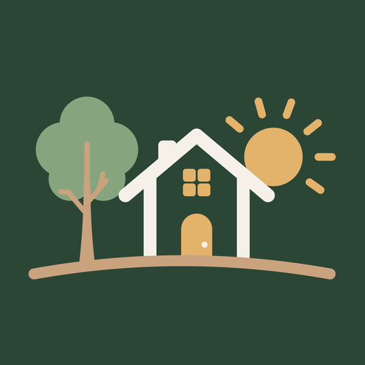

Guía de marca
Logo, colores y tipografías
Todo lo necesario para que la página, las redes, los letreros y las tarjetas se vean parecidos. Los archivos se descargan desde esta misma página.
Logo
Un árbol, una casa con la puerta encendida y el sol asomando detrás del techo. Las esquinas y los extremos de cada trazo son redondeados, para que se sienta cercano. Los textos van convertidos a curvas, así se ven igual en cualquier programa.














- Espacio libreDeja alrededor del logo al menos el alto de la puerta de la casa, sin textos ni bordes.
- Tamaño mínimoHorizontal: 140 px de ancho en pantalla o 3,5 cm impreso. Ícono solo: 24 px.
- Sobre fotosPonlo sobre una zona lisa o dentro de una franja beige. Nunca encima de partes muy recargadas.
- No modificarNo estirar, girar, cambiar colores ni reemplazar la tipografía del nombre.
Colores y proporciones
Una paleta de tierra y jardín: beige de base, verde como color de marca y café con caramelo para los detalles. La regla es 60 · 30 · 10. Mucho beige para que todo respire, verde para lo importante (botones, títulos, secciones destacadas) y café o caramelo solo en acentos, como la puerta del logo.
Beige · base
#F6F1E8Fondo principal de la página.#FFFCF7Tarjetas y formularios.#EEE5D5Secciones alternas y franjas.Verde · marca
#1F3328Secciones oscuras y pie.#2C4636Botones, títulos y casa del logo.#86A57FÁrbol del logo y detalles.#E4ECDDFondos suaves de íconos y etiquetas.Café y caramelo · acentos
#6B4A33Tronco y suelo del logo, frase.#BF8547Puerta del logo y acentos.#E3B26BSol del logo, acentos sobre verde.#8F5B2ATextos pequeños de acento sobre beige.Texto
#2B2621Texto principal. Contraste 13:1 sobre crema.#5C5248Párrafos secundarios. Contraste 6,8:1.Tipografías
Las dos son gratuitas (Google Fonts, licencia abierta) y ya vienen incluidas en la carpeta de la página, así que funcionan sin internet.
Para títulos y el nombre Vivelhoy. Es una serif con las terminaciones redondeadas (eje «Soft» al máximo): se ve seria y cálida a la vez. Peso 560 a 600.
Para textos, botones y menús. Es clara, amable y se lee bien en celulares. Peso 400 para párrafos y 600 para botones.
Formas
Nada de esquinas en punta. Los botones son cápsulas, las tarjetas tienen esquinas de 20 a 36 px y cuando una forma va dentro de otra, la de adentro es más chica (radio exterior menos el margen), para que las curvas se vean paralelas. Los íconos usan trazo de 1,8 con puntas redondas.